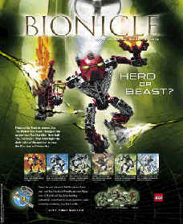
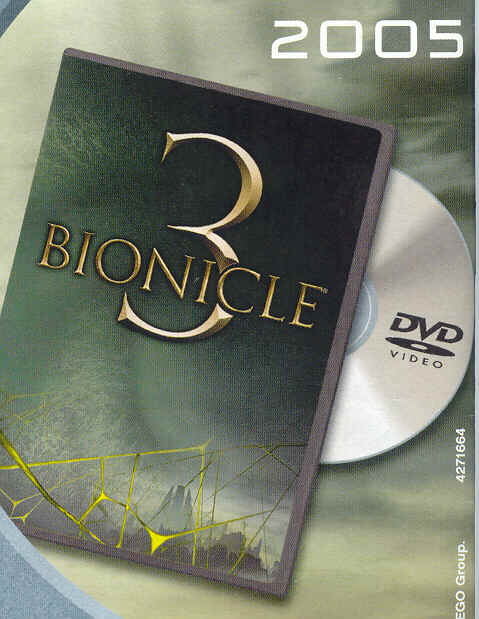
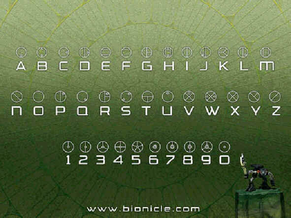

BIONICLE
 |
New Bionicle for 2005!
The Toa Hordika are the new hereos in the city of
legends, Metru Nui. The Six Toa who were transformed from
Matoran, have been poisoned by evil spider-like creatures
called the Visorak, and they have turned half hero, half
beast! Six Toa are included in the set. Toa Vakama Hordika =
Red = Toa of Fire |
 |
NEW BIONICLE FILM FOR 2005! Bionicle 3 is coming out fall this year, and it includes the Toa Hordika, Visorak, Sidorak, Roodaka and Keetongu! If you buy Sidorak, Roodaka or Keetongu on the back of the instructions it shows a picture of Bionicle 3 ( as seen on the left)! If you are a Bionicle fan, This is defiently a thing for you! |
My Bionicles ....
|
I have 42 Bionicles (Not including my inventions) and I will be
getting a whole load more soon!
Bionicle Dictionary ... Bionicledictionary
Bionicle Language ...
 |